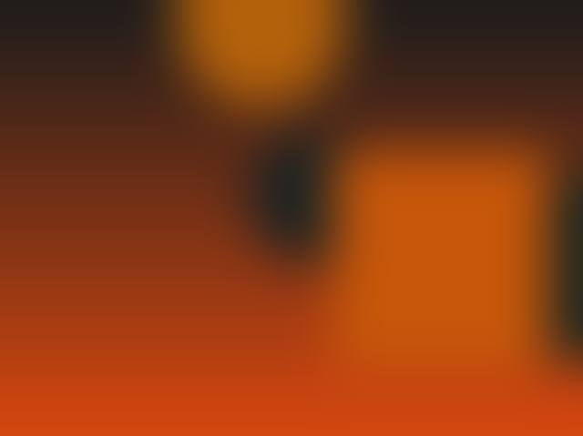
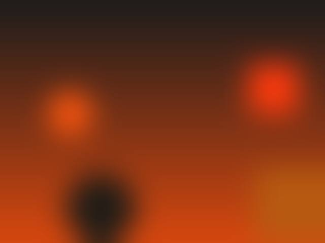

Tinichigerie auto
Reparăm avarii de orice complexitate, inclusiv praguri și lonjeroane, la structura metalică a caroseriei.
- masă de redresare a caroseriei
- sistem de măsură a caroseriei
- prese hidraulice de 5 și 10 tone
- sudură în mediu protejat
Tinichigerie, vopsitorie și recondiționare jante în atelierul nostru de pe Bd. Exemplului nr. 7, Constanța. Decontare directă cu asigurătorul și mașină la schimb cât timp lucrăm.
Luni–vineri 09:00–18:00 · sâmbătă și duminică închis
Facem reparația cu decontare directă la asigurător. Partea de acte cu asigurătorul o ducem noi.
După constatare, proprietarul mașinii deschide dosarul la asigurător. Dacă nu știi de unde să începi, sună-ne și îți spunem ce ai nevoie.
Tu
Deschidem comanda de reparație, facem evaluarea tehnică și reconstatarea, dacă e cazul. Întocmim devizul și obținem aprobarea asigurătorului.
Noi
Comandăm piesele și facem tinichigeria și vopsitoria în atelierul nostru. Cât timp mașina ta e la noi, îți dăm un vehicul la schimb.
Noi
Obținem acceptul de plată de la asigurător, facem recepția lucrării împreună și îți predăm mașina.
Împreună
Rămâi mobil cât timp lucrăm la mașina ta.
Fotografii reale, făcute în atelier, nu imagini de catalog. Trage de bandă ca să vezi rezultatul.

Nr. 02 Mercedes · față refăcută: tinichigerie și vopsitorie
Nr. 03 Volkswagen · lateral reparat, din grund până la lac

Nr. 04 Jantă din aliaj · recondiționată și vopsită
Nr. 05 Porsche Panamera · vopsit complet, în cabina de vopsire
Prețul îl stabilim după ce vedem mașina. Sună și programează o evaluare.
Reparăm avarii de orice complexitate, inclusiv praguri și lonjeroane, la structura metalică a caroseriei.
Vopsim pe element sau complet, în cabina de vopsire: pregătim suprafața, aplicăm vopseaua și finisăm. Restaurăm și faruri.
Jante din tablă sau aliaj, în nuanțe mate, metalizate sau perlate. Etrierele le vopsim fără să le demontăm, în trei straturi.
Scoatem zgârieturile fine și medii și hologramele din lac și redăm luciul. Tipul de polish îl alegem după un test al lacului.
Curățăm tapițeria, plafonul, ușile, bordul, mochetele și portbagajul, iar în final aplicăm protecție.
Programările se fac cel mai repede la telefon.
| Luni–vineri | 09:00–18:00 |
|---|---|
| Sâmbătă–duminică | Închis |